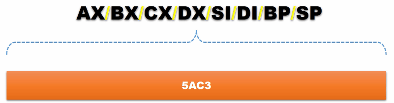
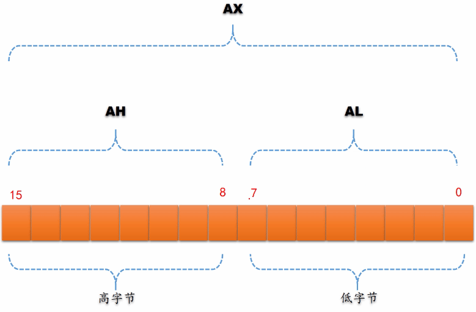

认识 8086 处理器
- TAGS: Assembly
主要内容
- 认识 8086 处理器
- 汇编语言和汇编软件
- 如何执行编译好的程序
认识 8086 处理器
主要内容
- 8086的通用寄存器
- 8086的内存访问和字节序
- 程序的分段
- 程序的重定位难题
- 段地址和偏移地址
- 8086内存访问的困境
- 8086选择段地址的策略
- 8086的内存访问过程
- 逻辑地址和分段的灵活性
8086的通用寄存器
认识 INTEL 8086 处理器内部的通用寄存器

在 INTEL 8086 处理器有 8 个十六位的通用寄存器。
AX{AH AL} SI
BX{BH BL} DI
CX{CH CL} SP
DX{DH DL} BP
通用的意思是它们可以根据需要可以用于多种目的。比如，可以在这些寄存器之间互相传递数据或者做各种算术逻辑运算；可以在这些寄存器和内存之间传递数据或者做各种算术逻辑运算。

这 8 个寄存器都是 16 位的，由 16 个比特组成。为了方便描述每个比特都有一个编号，从右往左依次为 0、1、2、3、4、5、6、7、8、9、10、11、12、13、14、15，其中最右边的比特叫 最低位 ，最左边的比特叫 最高位 。
16 位的寄存器可以保存 16 位的二进制数。如上图所示，寄存器保存了一个二进制数 0101 1010 1100 00011，等于十进制的 23235，等于十六进制 5AC3

使用二进制很不方便也很不直观，所以以后不再用二进制来表示数值，这样很麻烦。而是使用上图中的方法。这里寄存器用一个矩形来表示，寄存器的内容用十六进制给出，比如这里是 5AC3。
为什么计算领域的人都偏爱十六进制呢？
从一个十六进制数可以很容易知道二进制形式，反过来从一个二进制数很容易看出它的十六进制形式。如
# 2 进制转 16 进制 1000010100101111 # 16 个比特 将它从右往左分成 4 个 4位 1000 0101 0010 1111 # 右边的 4 位 1111 对应 16进制的 f，0010b = 2H，0101 = 5H，1000 = 8H 852f # 16 进制转 2 进制 3C09 只需要将每个 16 进制数写成 4 位 2 进制数。 9H = 1001b，0H = 0000，CH = 1100，3H = 0011 0011110000001001
使用 十六进制特别简短明了 ，这是我们为什么偏爱十六进制的原因。
在 8086 中，通用寄存器的前 6 个也就是 AX/BX/CX/DX 又各自可以拆分成两个 8 位的寄存器来使用，总共 8 个 8 位的寄存器，他们分别是 AH/AL ， BH/BL ， CH/CL ， DH/DL 。这样一来，当需要在寄存器与寄存器之间、寄存器和内存之间进行 8 位的数据传送或者 8 位算术逻辑运算时，使用它们就很方便。

范例： 寄存器 AX 的组成：高字节、低字节
AX
AH AL
15 ... 8 7 ... 0
--------- -------
高字节 低字节
AX 可以分成两个独立的寄存器 AH，AL。位 0 到位 7 这个 8 个比特属于 AL。从位 8 到位 15 这 8 个比特属于 AH。
在计算里一个字等于两个字节，因此 AX 长度为一个字，寄存器 AH 是寄存器 AX 的 高字节 部分，寄存器 AL 是寄存器 AX 的 低字节 部分。
范例： 寄存器 AX 的值
AX
AH AL
--------- -------
3E 2F
寄存器 AX 是由寄存器 AH 和 AL 组成，所以寄存器 AX 的值也是寄存器 AH 和 寄存器 AL 组成的。上例中 AX 的值是 3E2F，改变 AH 的值(00)对寄存器 AL 没有影响，但寄存器 AX 值会跟随改变，变成 002F。
练习
INTEL 8086 有哪几个通用寄存器？这些寄存器的长度是多少？
答：AX/BX/CX/DX/SI/DI/BP/SP 这 8 个通用寄存器。长度都 16 位的，长度是 1 个字，合两个字节。
以上寄存器中，有哪些可以分为两个8位的寄存器来用？这些8位的寄存器叫什么名字？
答：AX/BX/CX/DX 可以分成两个 8 位的寄存器。分别叫 AH,AL/BH,BL/CH,CL/DH,DL
如果向寄存器 DH 写入数字 08(十六进制)，向寄存器 DL 写入数字 3C(十六进制)，则寄存器 DX 值是多少(用十六进制表示)？
答：DX 是由 DH(高字节部分) 和 DL(低字节部分) 组成，AX 的值为 083C
8086的内存访问和字节序
程序的分段
程序的重定位难题
段地址和偏移地址
8086内存访问的困境
8086选择段地址的策略
8086的内存访问过程
逻辑地址和分段的灵活性
汇编语言和汇编软件
主要内容
- 创建汇编语言源程序
- 下载和安装编译器NASM
- 编译汇编语言源程序
- 配套源码和工具的使用
如何执行编译好的程序
主要内容
- 8086加电或者复位时的状态
- 8086地址空间的分配
- 跳转指令
- 硬盘的构造和工作原理
- 一切从主引导扇区开始